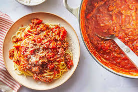

Spaghetti Noodles

Description
Spaghetti is a recipe that is as old as time and as simple as 1-2-3. Nearly everyone has some past time with spaghetti
that they can relate their childhood to at some point because it was simple enough for parents to quickly cook and tasty
enough for kids to have their endless energy replenished and relatively simple palettes' satisfied. Here is a quick and
easy recipe that will take you no more than 10 minutes!
Ingredients
- Barilla Spaghetti noodles
- Ground beef (93% lean 7% fat)
- Ground pork
- Corn
- Spaghetti sauce
- Canned tomatoes
- Basil Fresh basil will elevate a dish to the next level
Steps
- Cook noodles al dente per packaged instructions
- Cook ground beef and pork over medium-high heat until there is no pink left
- Drain excess oil
- Add spaghetti sauce and corn. Stir until well mixed
- Add noodles, mix, garnish with chopped basil and serve!